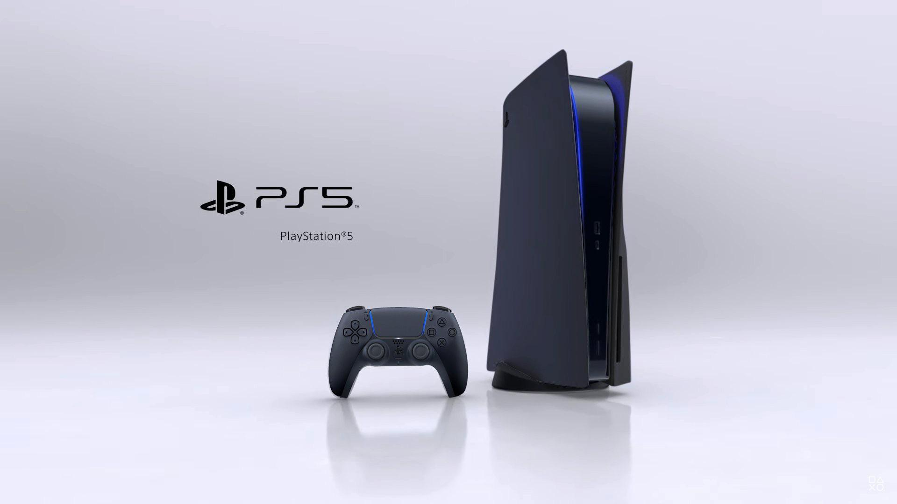
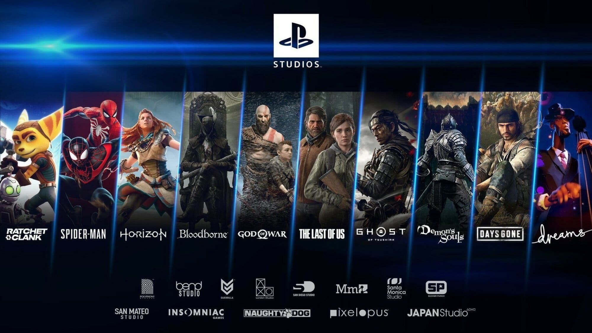

Playdom


Noticias
Más recientes
Los mejores juegos para PlayStation 5: los títulos que necesitas jugar ahora mismo
1 Marzo, 2022
Sony registra patente para mejorar el rendimiento del raytracing en PlayStation 5
28 Febrero, 2022
PS Plus: ya disponibles los juegos gratis de marzo de 2022 para PS4 y PS5
1 marzo, 2022